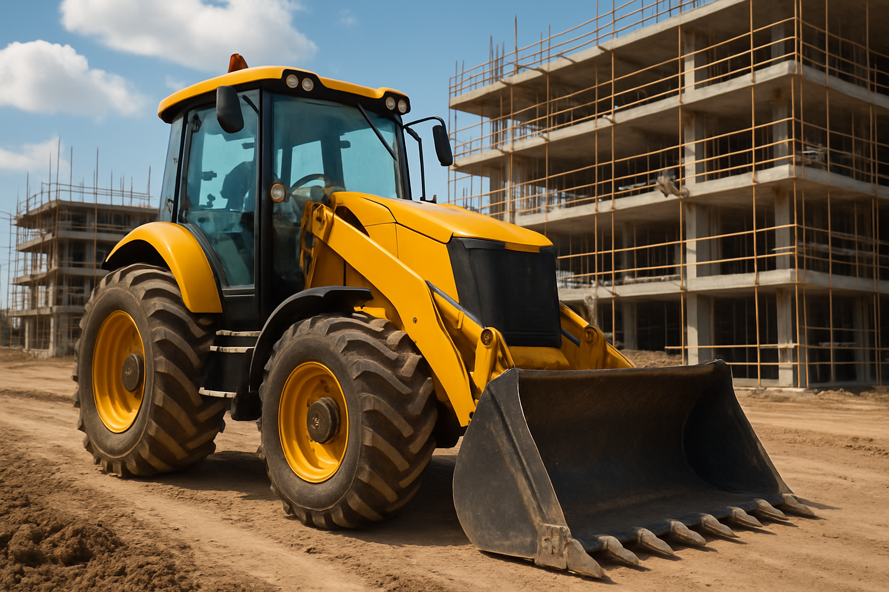

STARK TRACTOR
Com o objetivo de abastecer o mercado com reposição de peças na linha de máquinas pesadas e tratores, A Stark Tractor tem como meta atender com qualidade e agilidade em todas as regiões do Brasil através de um trabalho que garante a satisfação dos clientes, contamos com uma equipe especializada para melhor atendê-los. Oferecemos produtos de qualidade, preços justos e envio rápido.
Trabalhamos com as linhas:
Caterpillar, New Holland, Komatsu, Volvo, Case, entre outras marcas.
Motores Caterpillar, Perkins, Cummins, Transmissão, Material Rodante, Pinos e Buchas, vedações, filtros, penetração de solo, entre outras partes de seu equipamento.
